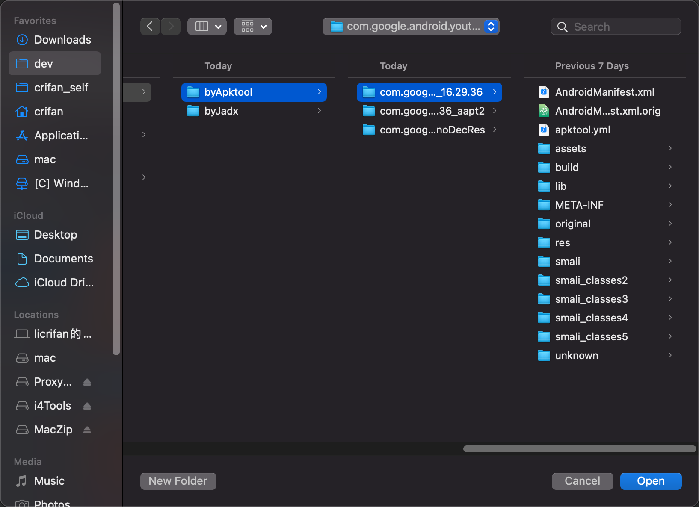
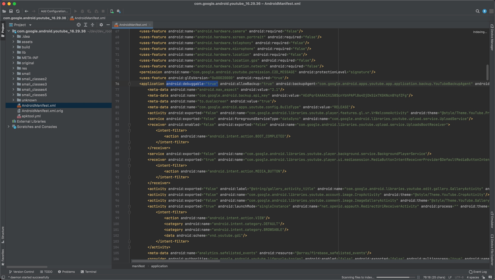
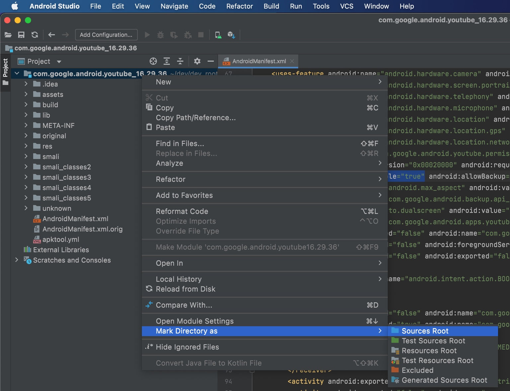

AS中导入smali代码
导入带smali源码的目录到Android Studio作为新项目：
导入smali的源码：
新版Android Studio的Welcome to Android Studio欢迎对话框中，点击：
Open

去选择对应的，Apktool反编译后的输出的目录：

导入后，即可：

然后把根目录设置为源代码根目录：
Mark Directory as Source Root

注：其实不需要像别人说的：
- 一定要：
- 只导入smali代码到项目中
- 只能把smali代码所在目录去mark as source root
而是：
- 只要当前项目中包含了smali代码
即可。
TODO：
- 【已解决】安卓AS调试apk的smali：导入apktool反编译的源码作为项目代码